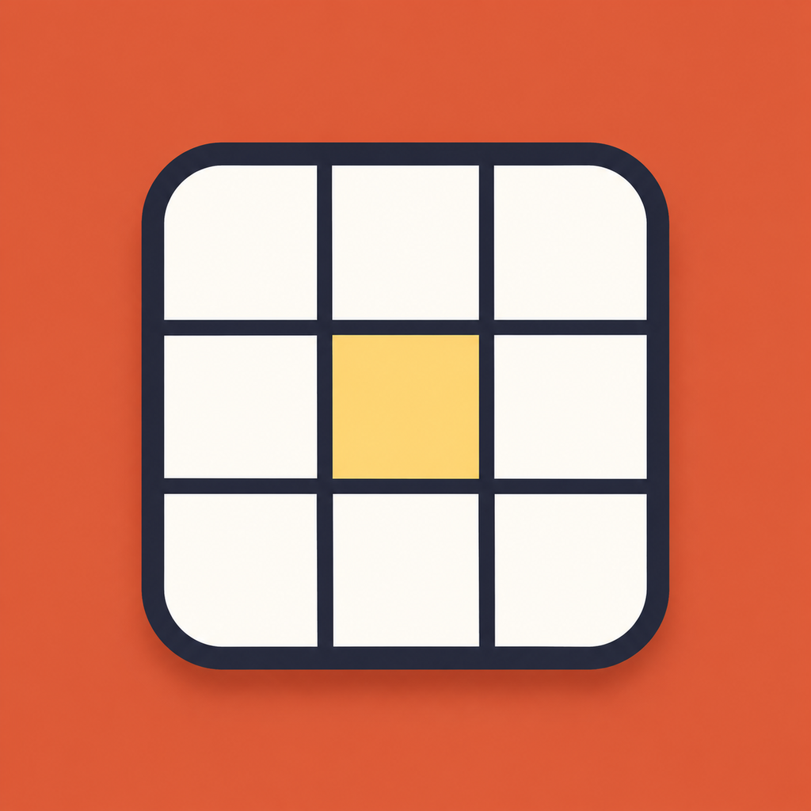
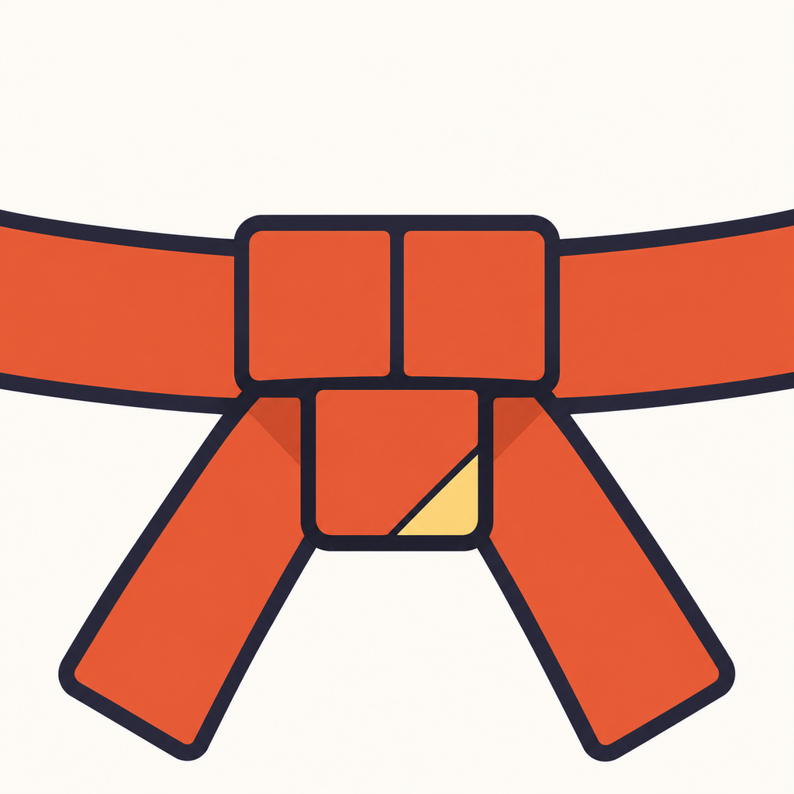
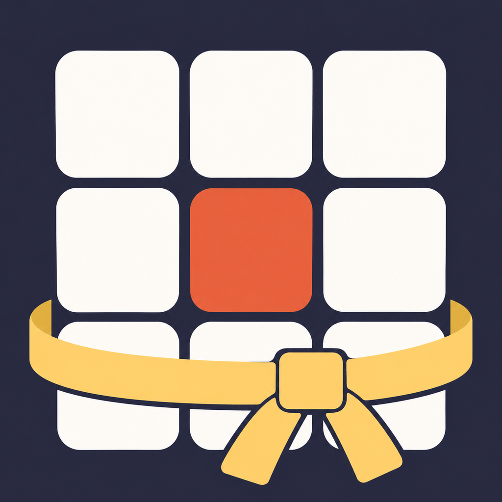

Current
Existing icon, kept as the reference.
Save PNGA · The next cell

Coral field, cream grid, gold centre. The current idea, with no digit.
Save PNGB · Tie the belt

A bold coral belt knot on cream, with a small gold fold.
Save PNGC · Earn your grid

Cream cells on ink, wrapped in a gold belt.
Save PNG